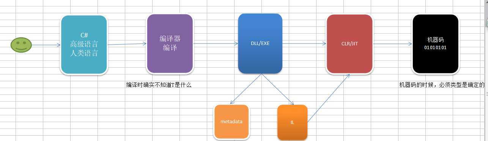

1、引入泛型
泛型不是一个简单的语法糖，是框架升级支持的

List<string>就是泛型，为什么要有泛型？
List<T>是一个集合，可能是一组int，也可能是一组string，泛型就是用一个东西来满足多种不同类型的需求的。
2、泛型方法
方法名称后面加上尖括号，里面是类型参数，类型参数实际上就是一个类型T声明，方法就可以用这个类型T了。泛型声明方法时，并没有写死类型，T是什么，并不知道，T要等着调用的时候才指定。正式因为没有写死，才拥有了无限的可能。
泛型的设计思想--延迟声明：推迟一切可以推迟的，一切能晚点再做的事，就晚一点再做。泛型不是一个简单的语法糖，是框架升级支持的。泛型方法的性能跟普通方法一致，是最好的，而且还能一个方法满足多个不同类型。
下面来看下代码是怎么写的：
public static void Show<T>(T tParameter)//, T t = default(T
{
Console.WriteLine("This is {0},parameter={1},type={2}",
typeof(CommonMethod), tParameter.GetType().Name, tParameter);
} 泛型类、泛型委托等和泛型方法声明类似：
//泛型类
public class GenericClass<T> where T : ISports
{
}
//泛型接口
public interface GenericInterface<S>
{
}
//方形委托
public delegate void Do<T>() where T : ISports;
WebService WCF都不能用泛型，为什么？
因为这些是跨语言的，别的语言也能用，不支持泛型，服务在发布的时候是必须确定的，泛型在编译时确定不了。
3、泛型约束
没有约束，其实很受局限。
基类约束：
where T:BaseModel
1、可以把T当成基类---权利
2、T必须是BaseModel或者其子类
为什么要有约束？
因为有约束才有权利，自由主义的鼻祖洛克先生说过，有了法律，才有自由。
泛型：不同的类型都能进来，任何的类型都能过来，你知道我是谁？
where T:class 引用类型约束；引用类型
where T:struct
where T:new() 无参构造函数约束
public static void Show<T>(T tParameter)
//where T : String//密封类约束的不行，因为没有意义
//where T : People
//where T : ISports
where T : People, ISports, IWork, new()
{
Console.WriteLine("This is {0},parameter={1},type={2}",
typeof(GenericConstraint), tParameter.GetType().Name, tParameter);
Console.WriteLine($"{tParameter.Id} {tParameter.Name}");
tParameter.Hi();
//tParameter.Pingpang();
} public T GetT<T, S>()
//where T : class//引用类型约束
//where T : struct//值类型
where T : new()//无参数构造函数
where S : class
{
//return null;
//return default(T);//default是个关键字，会根据T的类型去获得一个默认值
return new T();
//throw new Exception();
}
4、协变、逆变
.net4.0才出现的，只能放在接口或者委托的泛型参数前面
out协变 covariant，修饰返回值，只能作为返回值
in 逆变 contravariant，修饰传输参数，只能作为传入值
public class Bird
{
public int Id { get; set; }
}
public class Sparrow : Bird
{
public string Name { get; set; }
}
{//协变
IEnumerable<Bird> birdList1 = new List<Bird>();
IEnumerable<Bird> birdList2 = new List<Sparrow>();
Func<Bird> func = new Func<Sparrow>(() => null);
ICustomerListOut<Bird> customerList1 = new CustomerListOut<Bird>();
ICustomerListOut<Bird> customerList2 = new CustomerListOut<Sparrow>();
}
{//逆变
ICustomerListIn<Sparrow> customerList2 = new CustomerListIn<Sparrow>();
ICustomerListIn<Sparrow> customerList1 = new CustomerListIn<Bird>();
ICustomerListIn<Bird> birdList1 = new CustomerListIn<Bird>();
birdList1.Show(new Sparrow());
birdList1.Show(new Bird());
Action<Sparrow> act = new Action<Bird>((Bird i) => { });
}
{
IMyList<Sparrow, Bird> myList1 = new MyList<Sparrow, Bird>();
IMyList<Sparrow, Bird> myList2 = new MyList<Sparrow, Sparrow>();//协变
IMyList<Sparrow, Bird> myList3 = new MyList<Bird, Bird>();//逆变
IMyList<Sparrow, Bird> myList4 = new MyList<Bird, Sparrow>();//协变+逆变
}5、泛型缓存
每个不同的T，都会生成一份不同的副本，适合不同的类型，需要缓存一份数据 场景，效率高
如有不对的地方，希望大家多指教！